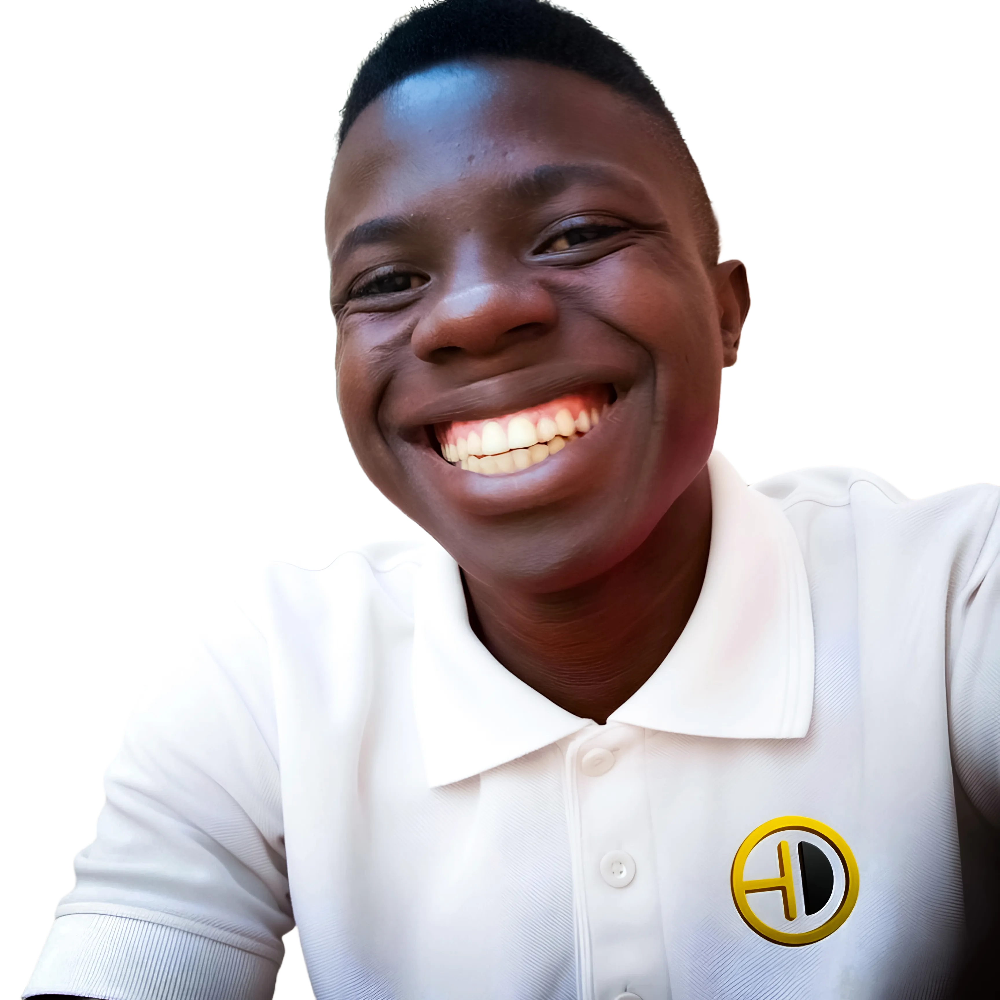

Mechatronics and Biomedical Engineering student researching brain-computer interfaces, neural data privacy, and assistive technologies. Founder of The Science Blueprint — an open-access science communication operation focused on neuroscience, neurotech, and neuroengineering.
My work lives at the intersection of rigorous engineering and the question of who gets to benefit from it. I build in public, publish open-access, and document everything.
For collaboration, citation questions, media, or general correspondence.